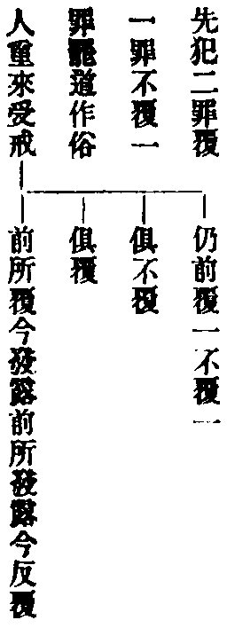
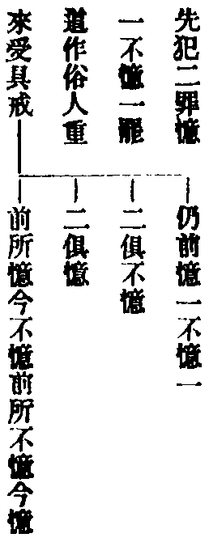
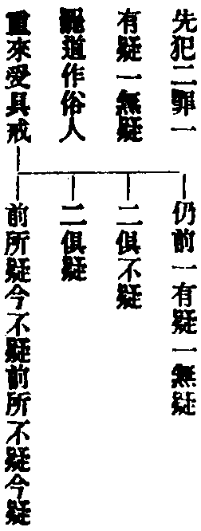
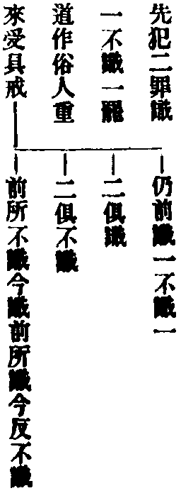
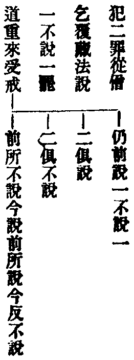
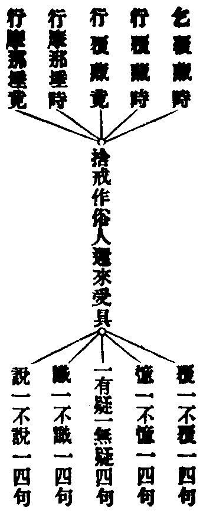
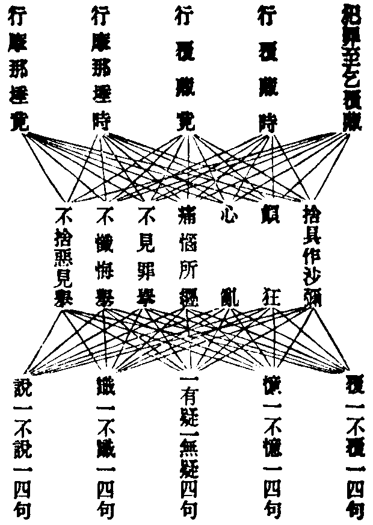
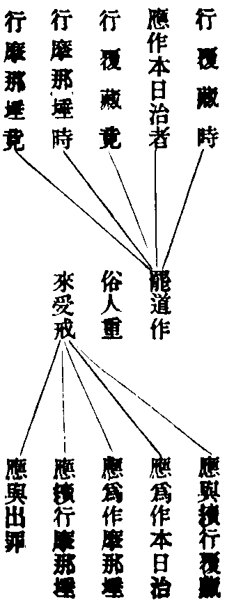

糾
音久。督也。彈也。急也。又察也。
重治毗尼事義集要卷第十三
○治罪法
夫罪從緣起。緣起無性。故對治道生。罪種則滅。名為罪性本空。非撥相以求性也。而無慚之輩。往往藉口觀心實相。不思作法除愆。嗟嗟。罪相尚自不知。何況通達實相。夫罪雖從心生。必因事而成業。則罪雖從心滅。豈離事而取空。況事有挾理之功。理無隻立之能。故說悔而不觀心。猶能決罪之流。倘談理而不發露。決難清罪之源。所願。各懷深信。勿致猶豫。各秉直心。莫隨放逸。本從理而立事。還因事以合理。庶得戒珠與慧日咸輝。三輪與七支同淨。紹隆佛種。光顯僧輪。永遮惡趣之門。速導菩提之路。
問。古人謂三種懺法。寧可缺於前前。不可缺於後後。良以罪如霜露。慧日能消。故必以理觀為主也。今獨扶作法。得無拘泥小教。未達大乘實相之奧旨耶。答。寧缺前前。不缺後後者。為緣缺者言也。如欲出罪。而無二十清淨僧可得者是也。又為顯示前前不兼後後。後後必具前前故也。若必耻作法。而不肯奉行。則是顧惜體面。隱忍覆藏。全未了知罪性本空。豈名慧日。故今獨扶作法。正所以為理觀之本。智者固達全事即理。愚者亦可因事入理。荊溪云。既云犯重。不獨觀心。言觀心者。行於事懺必藉觀心。若無觀心。重罪不滅。必事理合行。方辦前事。又云。事戒為三觀本。故云。尸羅清淨。三昧現前。若無事戒。世禪尚無。何況三諦。有言大乘何須執戒者。謬矣。言不執者。乃是持而不執。若令不持名不執者。乃是執破。何名不執。執持尚無。忘持安在。(文)今苟欲廢作法。便非時戒。事戒既缺。理觀何從。藉口實相大乘。止成惡取空見。自誤誤他。其失匪細。思之思之。
文分為六。初明治四棄法。二明治僧殘法。三明治偷蘭遮法。四明治輕罪法。五明諸羯磨法。六明覆鉢法。
△初明治四棄法。
第二分云。難提比丘。為魔所引。就死馬邊犯不淨行。無覆藏心。語諸比丘。往白世尊。佛聽僧與波羅夷戒(謂此人既犯重罪。則已毀破波羅夷戒。但以無覆藏心。啼泣不欲離袈裟服。故令眾僧和合白四羯磨。重復與其波羅夷戒。仍得與諸比丘共住也)。彼應三乞。僧為白四羯磨。既與戒已。當隨順行法。不得授人具戒。不得與人依止。不得畜沙彌。不得受差教授比丘尼。不應為僧說戒(此謂講演戒法)。不應住僧中問答毗尼。不應受僧差使作知事人。及處斷事作使命。不應早入聚落逼暮還。當親近比丘。不得親近外道白衣。當順從比丘法。不得說餘俗語。不得眾中誦律。若無能誦者聽(此謂半月半月誦戒)。不得更犯罪。不得非僧羯磨。及作羯磨者。不得受清淨比丘敷座。洗足水。拭革屣。揩摩身。禮拜。迎逆。問訊。及捉衣鉢。不得舉清淨比丘。為作憶念。作自言治。不應證正人事。不得遮清淨比丘說戒自恣。不得與清淨比丘共諍。說戒及羯磨時。來與不來。眾僧無犯。若重犯波羅夷戒。應滅擯。
根本雜事云。乃至斷盡煩惱以來。常應順行。不行得罪(斷盡煩惱。謂證阿羅漢果。以來。謂未證果以前也)。若獲果證以後。不應更行。
僧祇律云。與波羅夷學者。應在一切比丘下坐。一切沙彌上坐。不得與比丘同屋過三宿。復不得與沙彌過三宿。比丘不淨食。彼亦不淨。彼不淨食。比丘亦不淨。
十誦律云。與學沙彌法者。佛所結一切戒法。盡應受行。得與比丘作布薩自恣二羯磨。不得足數作布薩自恣羯磨(謂布薩羯磨。須有四清淨比丘。若止有三清淨比丘。一與學者。便不可作布薩羯磨。止可對首布薩也。自恣須五人亦爾)。餘一切羯磨悉不得作。
毗尼母經云。此比丘得羯磨已。名為清淨持戒者。但此一身。不得超生離死。亦不得無漏功德。然障不入地獄耳。喻如樹葉落已。還生樹上。無有是處。
問。與學之人。根本許其證果。可捨行法。母論則謂不得證果。此云何通。答。根本約難提示現。故證果可期。母論指佛法通途。故證果絕分。葉落無還生之理。造罪者寧不寒心。作法通無生之致。懺悔者大須努力。
善見律云。婬欲妄語。其相易現。殺盜二戒。其相難知。因細而得。從細而解。是故莫向狐疑人道。汝得波羅夷罪。應令往問師及同學。或弟子等。若見有罪相者。令靜坐一房。使其自觀。若戒無病。心便入定。若破戒者。心即不定。然後隨應決之。
問。犯不淨行。絕不覆藏。得與波羅夷戒。未審犯餘三重。亦得爾不。答。難言也。雖然。請試言之。且如盜戒。以五緣成重。一是他物。二他物想。三盜心取。四直五錢。五離本處。設有比丘。偶見一物。生貪愛心。盜心舉離本處。爾時已成重罪。次念尋悔。仍置不取。無覆藏心。急求與學。寧得不與。倘既取物。後方發露。輒濫與之。寧不招過。又如殺戒。若欲殺此人。悞殺彼人。戒雖未失。世法已不可容。況復遂彼殺心。縱令不覆。何當與學。然準維摩及淨業障二經。亦未始不稍通一線也。次則大妄語戒。若為利養。故大妄語。則必不能無覆藏心。理無聽許。設因命難及梵行難。作大妄語而得脫之。隨即發露求哀。亦安可終杜絕。當知須是善能滅諍。不愛不恚不怖不癡之人。方可宰任其事耳。
大般涅槃經云。有持戒比丘。威儀具足。護持正法。見壞法者。即能驅遣訶責糾治。當知是人得福無量。不可稱計。若善比丘。見壞法者。置不驅遣訶責舉處。當知是人。佛法中怨。
若犯四重。作五逆罪。自知定犯如是重事。而心初無怖畏慚愧。不肯發露。於佛正法。永無護惜建立之心。毀呰輕賤。言多過咎。如是等人。亦名趣向一闡提道。若復說言無佛法眾。如是等人。亦名趣向一闡提道(梵語闡底迦。此云多貪。深樂生死故。又阿闡底迦。此云無欲。不樂涅槃故。又阿顛底迦。此云極惡。斷盡善根故)。
問。依律。則比丘犯棄。如有羅已斷。不復還生。犯二篇者。須別住意喜。復須二十僧中出罪。乃至惡作。亦必對首懺悔。方得清淨。何故大佛頂經云。若造五逆無間重罪。及犯四棄八棄。誦此呪者。悉皆除滅。更無毫髮。諸佛菩薩。不但不將為過。亦將功德與之。乃至悟無生忍。如是觀之。罪無大小。只須持呪。曾無發露向彼之科。經律宵壤。義云何通。答。佛頂光聚微妙章句。名為呪心。亦名心呪。即是密詮首棱嚴王三昧。試觀於顯說中。最初便勅直心酬問。心言直故。永無諸委曲相。倘罪無大小。不肯發露向人。既違如來一道。豈合無上呪心。經中為顯密印神功。故云罪無不滅。不惟此經為然。舉凡尊勝。大悲。方等諸呪。乃至三十五佛。五十三佛。五千五百佛名等經。皆有此義。正由眾生惑業障深。無知造罪。難調難伏。難拔難除。故毗尼嚴擯絕之科。經呪開自新之路。一折一攝。相為表裏。令未造罪者。不敢故造。已造罪者。還得滅除。可謂徹底悲心。勝妙方便。倘無律制。則住持僧寶不尊。倘無經呪。則罪障眾生永墜。四悉巧被。同出一音。豈容妄生軒輊哉。
△二明治僧殘法。
第三分云。犯僧殘罪。覆藏。隨覆藏日。與治覆藏罪。彼應僧中偏露右肩。脫革屣。禮僧足。合掌。胡跪。白言。大德僧聽。我某甲比丘。犯僧殘罪。覆藏。我某甲比丘。犯僧殘罪。隨覆藏日。今從僧乞隨覆藏日羯磨。願僧與我隨覆藏日羯磨。慈愍故。如是三說。僧應白四羯磨與之(若覆藏一日。則行一日別住法。若覆藏二日。則行二日別住法。乃至五日。十日。半月。一月。半年。一年等亦爾)。
行覆藏時。更犯重罪。應乞作覆藏本日治。白四羯磨(謂正行別住。又犯僧殘。則前所行行法皆壞。應更乞僧。從本日再治罪起。如前行之)行覆藏竟。應乞作六夜摩那埵。白四羯磨。行已。次作白四羯磨出罪。
行摩那埵時重犯。應乞摩那埵本日治(同覆藏本日治義)。行已。出罪。
有犯眾多僧殘罪。或覆藏一夜。或乃至十夜。聽與共作眾多僧殘罪。覆藏十夜白四羯磨。次與摩那埵出罪。
若犯二罪。二俱覆藏。或憶一不憶一。或一有疑一無疑。或識一不識一。或說一不說一。應隨所憶所識(識即無疑)所說。與覆藏羯磨。後還憶還識還說者。應隨所犯。仍與覆藏羯磨。覆藏兩月。憶一月不憶一月等。亦如是。
若犯二僧殘罪。罷道。罷道已。還受大戒。或先後俱覆藏。或先覆藏後發露。或先發露後覆藏。隨所覆藏日。與覆藏羯磨。或先後俱發露。即與摩那埵。行已。出罪。
覆一不覆一等作四句。亦如是。憶一不憶一等各作四句。亦如是。乞覆藏時(說一不說一)作四句。亦如是。
作沙彌還受大戒百句。亦如是。顛狂。心亂。痛惱所纏。各百句。亦如是。僧與作不見罪舉。不懺悔舉。不捨惡見舉。各百句。亦如是。
種種四句二十句乃至百句之圖
覆一罪不覆一罪作四句之圖

憶一罪不憶一罪作四句之圖

疑一罪不疑一罪作四句之圖

識一罪不識一罪作四句之圖

乞覆藏時說一不說一四句圖

右五圖。每圖四句。共有二十句。且約犯罪。乃至乞覆藏時罷道而言之也。復有行覆藏時罷道。行覆藏竟罷道。行摩那埵時罷道。行摩那埵竟罷道。亦各具二十句。通前共成罷道百句。以例作沙彌等七事。亦各有百句。以圖示之。
罷道共有百句圖

七百句圖

且如作沙彌一句。上含五時。一一時中。下含覆一不覆一等各各四句。一時中凡含五箇四句。成二十句。五時各二十句。共成百句。即是捨具戒作沙彌重來受具。有此百句差別不同。皆當隨其所應。而與之以種種羯磨法也。其顛狂等三病。約還得本心。例各百句。不見罪等三舉。約乞得解擯。亦例各百句。共成七百句也。
若行覆藏時罷道。或應作本日治者罷道。或行覆藏竟罷道。或行摩那埵時罷道。或行竟罷道。後還受戒。各隨應與之。作沙彌等各五句。亦如是。
罷道重受具戒五句之圖

作沙彌重受具。亦同此五句。顛狂。心亂。痛惱所纏。還得本心。亦各同此五句。不見罪舉。不懺悔舉。不捨惡見舉。得解羯磨。亦各同此五句。共成四十句。
有犯僧殘罪。謂犯棄覆藏。謂犯波逸提乃至惡說。覆藏。彼應作突吉羅懺。即與摩那埵。有犯波逸提。謂是棄罪等而覆藏者。皆先作突吉羅懺。後如法懺。若犯僧殘。作僧殘意覆藏。應作突吉羅懺已。與覆藏羯磨若犯僧殘。不憶犯數。不憶日數。或憶犯數。不憶日數。皆應與清淨已來覆藏。若憶日數。不憶犯數。應數日與覆藏。疑不疑等亦如是。
若行摩那埵時重犯罪覆藏。應更與摩那埵。次與本日治。然後出罪。
自行覆藏乃至出罪等。不應更互作覆藏羯應。本日治摩那埵。足論二十人出罪。
行覆藏比丘。有八事失夜。得突吉羅罪(謂如下文所明。如此八種應白而不白。則此日不名行別住法。應悔突吉羅罪已。更補行一日也)。一往餘寺不白。二客比丘來不白。三有緣事自出外不白。四寺內除行者不白。五病不遣信白。六二三人共一屋宿。七在無比丘處住。八不半月說戒時白。應如是具威儀白。大德僧聽。我某甲比丘。犯僧殘罪。覆藏。我某甲比丘。隨覆藏日。從僧乞覆藏日羯磨。僧已與我隨覆藏日羯磨。我某甲比丘。已行若干日。未行若干日。白大德令知。我行覆藏。
若布薩日。彼人輭柔。多有羞愧。應至清淨比丘所白言。大德上座。我今日捨教敕不作。若欲作時。應至清淨比丘所白言。我今日隨所教敕當作。
根本百一羯磨云。如行徧住(即別住)及行摩那[卑*也]時。聞有苾芻是鬬諍者。是評論者。或復無慚懈怠之類。欲至於此。應對苾芻捨其行法。其人去已。還就善淨苾芻受其行法。
五分律云。別住比丘欲遠行。應捨竟去。向一如法比丘言。大德聽。我今捨別住法。後更行之。如是三說若不捨而去。於路上見比丘。便應自說。大德。我某甲比丘。行別住法。已若干日。餘若干日。大德憶持。若捨別住。到餘處。應求彼僧更行別住。破僧應聽。
有比丘或行別住時。或行摩那埵時。或阿浮阿那時。命過。諸比丘白佛。彼為具戒命過。為破戒命過。佛言皆是具戒律攝云。有六種人犯眾教罪。對一苾芻說除其罪。得名清淨。一者持蘇呾羅藏。二者徧持毗柰耶藏。三者徧持摩咥里迦藏。四者性極羞恥。若說其罪。懷慚致死。五者眾中最老上座。六者大福德人。此六人者。人見治罰。謗議便生。若能於所犯罪。決情斷絕。誓不更為。深生慚恥。心無欺誑。便得除滅。若犯不共眾教罪者。根轉之時。過亦隨滅(比丘於十三事中。一弄陰。二觸女。三麤語。四欺身。五無主作房。六有主作房。皆不與尼同。尼於十七事中。亦有十事不同比丘。故名不共)。
十誦毗尼序云。上座犯僧殘。行摩那埵。令人生不信心。得一心生念。從今日更不作。即得清淨。大德多知亦爾。寧當反戒。不能行摩那埵者亦爾。病比丘無力。不能行摩那埵者亦爾。有一比丘犯僧殘。眾不滿二十。欲至他處懺悔。道路遇賊奪命。又一比丘犯僧殘。眾不清淨。欲至他處懺悔。道路遇賊奪命。是人一心生念如法懺悔。即得清淨。不墮惡道。註曰。凡有六種懺悔法(一上座。二大德。三羞恥。四病弱。五眾不滿。六眾不清淨)。不可妄用。及有僥倖也。唐有自欺。罪亦不除。要須廣問明律者。能斷之耳。
問。律攝所謂六種人。乃人天眼目。僧中首領。當觀突吉羅罪。與四棄等。今犯麤罪。寬恕若此。則其餘學處。應無礙耶。答。既作僧中首領。自然輕重無虧。止因煩惱習強。或致偶違淨法。發露則反動羣疑。自誓必永無欺誑。此等懺法。原非可徼倖自欺。豈得輙漫云無礙。
△三明治偷蘭遮法。
十誦律云。從波羅夷生重偷蘭遮。應一切僧前悔過除滅(婬則二身相觸而未入。盜則擇取五錢而未離本處。殺則傷彼前人而不死。妄則誑稱證得而不了了也)。從波羅夷生輕偷蘭遮(婬則兩身相向而未觸。盜則觸他重物未擇取。或擇取輕物未離處。殺則興害方便未傷人。妄則未出口中止)。從僧殘生重偷蘭遮(弄陰則精未出而中止。觸女身則一有衣一無衣。麤語及索供。則說不了了。媒嫁。則不受。語而往說還報。大小房。則作而不成。瞋謗。則說不了了。破僧主破僧伴。訶僧。不受諫。並至羯磨時方捨。皆是重。方便罪)。皆應出界外。四比丘前悔過除滅。從僧殘生輕偷蘭遮。一比丘前悔過除滅(以手捉陰而未弄。二俱有衣互相觸。麤語索供未出口而止。媒嫁往說不還報。大房小房規度而未作。瞋謗未出口中止。破僧至惡性。初白時便捨。皆名輕方便罪)。
此從生罪。亦名方便蘭。亦名因蘭。
四分羯磨云。獨頭偷蘭遮有三差別。如破法輪主。盜四錢。殺天等。名上品。若破羯磨主。破法輪伴。盜三二錢等。名中品。若破羯磨伴。鬀毛。裸形。畜人皮。石鉢。食生血肉。著外道衣。盜一錢等。名下品。準如從生偷蘭遮罪。三種懺法。應知。
此獨頭罪。亦名自性蘭。亦名果蘭。所謂等流罪也。問。破僧是逆罪。重難。云何可作偷蘭遮罪懺耶。答。破法輪主是逆。伴即非逆。破羯磨僧。若主若伴。並不名逆。又破法輪主。雖是逆罪。仍不失比丘戒。故亦僅名偷蘭遮罪。不名為波羅夷。若僧輪未破。仍可懺悔。破則成逆。不可單作法懺。須是無生懺也。至於破法輪伴。破羯磨主。並通懺悔。但設捨戒還來受具。則便成重難矣。
△四明治輕罪法。治尼薩耆。已如三十事說。今但總明治波逸提突吉羅等諸罪也。
第三分云。比丘犯罪。若欲在一比丘前懺(謂尋誓波逸提突吉羅等小罪)。應至一清淨比丘所。偏露右肩。若上座。禮足(下座則除此法)。胡跪。合掌。說罪名。說罪種。作是言。長老一心念我某甲比丘。犯某甲罪。今從長老懺悔。不敢覆藏。懺悔則安樂。不懺悔不安樂。憶念犯發露。知而不覆藏。長老憶念我清淨戒身。具足清淨布薩。如是三說。彼應語言。自責汝心。應生厭離。答言。爾。
若欲在二比丘邊懺悔(謂就波逸提中。其情稍重。須向二人說悔。其心始安。或住處通己但三人)。應至彼二清淨比丘所。偏袒說罪等如土。受懺者。應先問彼第二比丘。若長老聽我受某甲比丘懺者。我當受。彼應言。可爾。
若欲在三比丘邊懺。亦如是(亦是波逸提中罪性重者。意須向三人悔。其心始安。或彼住處。通己共四人也。彼應轉語二人方受)。
若欲在僧中懺者(從四比丘乃至無數。皆名為僧。即是懺上中二品偷蘭遮罪。及僧中捨衣。僧中懺也)。應往僧中。偏袒。脫屣。禮僧足。胡跪合掌。作是白。大德僧聽。我某甲比丘。犯某甲罪。今從僧乞懺悔。如是三說。受懺者應作白。然後受彼懺。大德僧聽。彼某甲比丘。犯某甲罪。今從僧懺悔。若僧時到。僧忍聽。我受某甲比丘懺。白如是。作是白已。受懺。彼應如前三說懺悔。應語言。自責汝心。生厭離。答言。爾。
毗尼母經云。上座於下座有所犯罪。現前應立四法發露。一偏袒右肩。二脫革屣。三合掌。四說所犯罪。下座向上座悔所犯者。現前應立五法。加第三胡跪(此上下座。不約九夏內。二十夏外論也。但先受戒乃。至須臾頃者。即名上座。又依四分。則上座向下座悔。但除禮足。亦須胡跪)。根本雜事云。具五種法。應作懺摩。一者有信心。二者發精進。三者生恭敬。四者口出美言。五者近善知識。
十誦毗尼序云。若賊捕得。若病人。雖相應罪。聽心念口言懺。後從清淨比丘懺悔。後聽受彼懺悔(相應罪者。同犯此一罪也。平居之時。不得向同犯者懺悔。同犯者亦不得受他懺悔。今在難中。故令不病之人。不被賊捕之人。先作意曰。我今此罪。後更當從清淨比丘懺悔。作此意已。即得受彼病人賊捕得人懺悔。使彼死後不墮落也)。
△五明諸羯磨法。
第三分云。有二比丘。喜鬬諍。共相罵詈。口出刀劒互求長短。亦復勸助餘人鬬諍。佛令僧作訶責。白四羯磨。集僧已。為作舉。作舉已。為作憶念。憶念念已。與罪。大德僧聽。此某甲比丘。喜共鬬諍。共相罵詈。口出刀劒。互求長短。彼共自鬬諍已。若有餘比丘鬬諍者。復往彼勸言。汝等勉力。莫不如他。汝等多聞智慧。財富亦勝。多有知識。我等當為汝作伴黨。令僧未有諍事而有諍事。已有諍事而不除滅。若僧時到。僧忍聽。為某等比丘作訶責羯磨。若後復更鬪諍共相罵詈者。僧當更增罪治。白如是。羯磨準作。若隨順眾僧。無所違逆。求解羯磨者。應解。僧中三乞。為作白四。
被擯比丘。不應不喚來至界內。聽遣好信來至僧中白懺悔(謂汙他家。行惡行者)。與依止比丘。學法毗尼。得智慧隨順眾僧。不敢違逆求解羯磨。應解。
比丘有十法。應與作遮不至白衣家羯磨。惡說罵白衣家(一)。方便令白衣家損減。作無利作無住處(二三四)。鬪亂白衣(五)。於白衣前謗佛法僧(六七八)。在白衣前作下賤罵(九)。如法許白衣而不實(十)。有五法比丘。不應為作此羯磨。不恭敬父母。沙門。婆羅門。所應持者而不堅持(別應作訶責折伏等法也)。若恭敬父母沙門婆羅門。所應持者堅持不捨。如是比丘。犯前十法。應住遮不至白衣家羯磨。作已。應差一比丘至白衣家。為此比丘懺悔。有八法應差。一聞。二能善說。三己自解。四能解人意。五受人語。六能憶持。七無缺失。八解善惡言義。有如是八法應白二羯磨。差至白衣家。如是語。居士。懺悔。僧已為此比丘作罰謫。彼若受懺者善。若不受。應安此比丘著居士眼見耳不聞處。教令如法懺悔。復來語言。居士懺悔。彼比丘先犯罪。今已為懺悔。罪已除。彼若受懺者善。若不受。犯罪比丘應自往懺悔。懺悔已。順從於僧。不敢違逆。乞解羯磨。聽解。
若作訶責羯磨。擯羯磨。依止羯磨。遮不至白衣家羯磨。不見罪舉羯磨。不懺悔舉羯磨。不捨惡見舉羯磨。隨覆藏日羯磨。本日治羯磨。六夜摩那埵羯磨。作如是等羯磨已。有五事不應作。一授人大戒。二受人依止。三畜沙彌。四授僧差教授比丘尼。五若僧差不應教授。又五事不應作。一說戒。二答僧問毗尼義。三僧差作羯磨。四在僧中簡集智慧者共平論眾事例。五僧差作信命。又不應早出暮還。不應親近外道。不應作異語。不應更犯罪。不應嫌羯磨及羯磨人。不應受善比丘供養禮拜等。不應舉善比丘。不應遮布薩自恣。不應與善比丘共諍。應在大比丘下行坐。在後行。應為清淨比丘掃灑。敷座。乃至持衣鉢。揩摩身等。如事師法。應日三時見清淨比丘。若至布薩日。應掃灑乃至具舍羅。布薩竟。應收攝。
僧祇律云。有五事。與折伏羯磨(即所謂訶責羯磨也)。一習近八事。謂身習近住。口習近住。身口習近住。身習近住者。共牀坐。共牀眠。共器食。迭共著衣。共出。共入。口習近住者。迭互染汙心語。身口習近住者。共牀坐。乃至語時展轉相為。迭互染汙心語(身有六。口有二。共八事也)。二數數犯罪。三諫不止。三太早入聚落。太冥出。惡友惡伴。非宜處行。四諍訟相言。三諫不止(五法成就。諍訟更起。一自高。二麤弊兇性。三無義語。四非時語。五不親附善人)。五恭敬年少。三諫不止。若作折伏羯磨。不隨順行。若數犯小罪。口雖受諫而仍犯者。皆應與不共語羯磨(即所謂依止羯磨也)。汙他家。行惡行。與擯羯磨。擾亂俗人。生不歡喜。與發喜羯磨(即所謂遮不至白衣家羯磨也)。不見罪。不如法作(即不懺悔)。不捨惡見。與舉羯磨行波利婆沙比丘。應隨順行七事。何等七。比丘事。比丘尼事。眷屬事。入聚落事。執眾苦事。受拜事(謂受僧差)。王事。云何比丘事。不得受比丘禮。不得說比丘罪。不得與比丘語論。不得說沙彌罪。不得福罰沙彌(謂賞罰也)。不得與沙彌語論。不得作比丘使。眾集時。不得為眾作說法人。除別處。是名比丘事。云何比丘尼事。不得受尼禮。不得說尼罪。不得與尼語論。不得說式叉摩那沙彌尼罪。不得福罰彼。不得與彼語論。不得遮尼布薩自恣。不得遮尼齊門止(因諸比丘尼打迦毗盧尊者。佛勅比丘見尼入寺。當遮令齊門而止。必有正務。白已。方許其入。今行別住等比丘。則不得遮尼也)。不得往教誡尼。若已受者不得往(謂未犯前。雖曾受差。今罪未除。不可往教)。是名比丘尼事。云何眷屬事。不得與人受具。不得受人依止。及畜沙彌。不得受比丘供給。不得授人經。不得從他受經。本所誦經。當細聲讀。若先有依止弟子。教令依他。當斷眷屬。是名眷屬事。云何入聚落事。不得太早入太晚出。不得作前後行沙門入(別住等比丘應在一切清淨比丘下行坐。在後行。若別在前行或別作後行。即是不肯隨順行法也)。不得到知識檀越家。不得無比丘僧伽藍中住。坐時食時。在比丘下。不得使人迎食。不得與人迎食。除次到(輪番直日與人迎食不犯)。是名入聚落事。云何執眾苦事。晨起。掃塔院僧院。洗僧大小行處。如是一切可作事。應隨力作。不得與欲。不得受他欲。除次到(輪番為人傳欲。不犯)。是名執眾苦事。云何受拜事。不得受一切拜。白一羯磨。白三羯磨。盡不得受。是名拜事。云何王事。不得恃王大臣居士凶人力勢。不得嫌佛嫌法嫌僧嫌羯磨人。但自責。不得嫌他。是名王事。波利婆沙及磨那埵比丘。行此七事。是名隨順行。不行者。是名不隨順行。
作折伏羯磨者。應隨順行五事。比丘事。尼事。眷屬事。羯磨事(即受拜事)。王事(但除入聚落事。執眾苦事)。作羯磨已。應語言。長老。汝莫更犯。犯者僧更重治汝。是五事應一一隨順行。行已折伏下意。僧應與作捨羯磨。
作不語羯磨者。亦應隨順行上五事。作羯磨已。復應隨順行五事。雖復百歲。應驅依止持戒。下至知二部律十歲比丘。一晨起。應問訊。與出大小行器。唾壺。舉置常處。與齒木。與掃地。迎食。浣衣。熏鉢。一切盡供給。唯除禮拜按摩。若病時。得令按摩(二)。應教二部律。若不能者。乃至應教五篇戒(三)。應教善知陰界入十二因緣(四)。應教善知罪相非罪相。威儀應教。非威儀應遮(五)。若學已。即名為捨。
作擯出羯磨者。亦應隨順行上五事。羯磨已。應安著僧伽藍邊住。隨順行五事。一一如法已。應與捨。
作法喜羯磨者。亦應隨順行上五事。羯磨已。應遣到所犯俗人家悔過。令其歡喜。若彼喜者。即名為捨。
作舉羯磨者。亦應隨順行上五事。羯磨已。應安著。僧伽藍外邊。門向阿蘭若處。若來入塔院僧院掃地者。比丘應逆掃其迹。若來益洗脚處水大小行處水者。應還瀉棄。若共行弟子依止弟子。不得喚作和尚阿闍棃。不應語言。餘人應語令隨順行。應捨惡邪。惡邪比丘。不應共語。不應共住。不應共法食。不共佛。不共法。不共僧。不共布薩。不共自恣。不共羯磨。得語外道。欲坐便坐。不得語被舉者令坐。若病者。不應看病。得語彼檀越若親里言。被舉人病。汝往看。若無常者。不應與華香供養屍。不應為作飲食非時漿供養僧。不應分衣鉢。不應與燒身。取其所眠牀。以屍著上。衣鉢繫咽。曳牀而出。作是言。眾僧事淨。眾僧事淨。於惡邪比丘。不應起惡心。何以故。乃至燋炷。不應起惡。應作是念。莫令後人習此邪見。若放牧人取薪人持衣鉢來施者。得取。即彼為施主。若被舉人。隨順行五事。得正見。心意調柔者。得與捨。
有三事得舉。戒不淨。見不淨(或謂淫不障道。或謂殺無果報。或執斷執常及計世界有邊無邊等)。命不淨。有三因緣得舉。見聞疑。復次比丘成就五法。得舉他罪。是實非虗。是時。非非時。是饒益。非不饒益。是輭語。非麤獷。是慈心。非瞋惡。又成就五法。得舉他。淨身業。淨口業。正命。多聞阿毗曇。多聞毗尼。復次有五種舉他。有罵而後舉。有舉而後罵。有即舉而罵。有罵而不舉。有舉而不罵。是中先罵後舉。舉已後罵。即舉而罵者。僧不應受。舉而不罵者。應檢校。
有五法成就。不應舉他。隨愛。隨恚。隨怖。隨癡。為利故。若成就此五事舉他。身壞命終。墮惡道。入泥犁。有五法成就。應舉他。不愛。不恚。不怖。不癡。不為利。若成就此五法。得舉他。身壞命終。生善道。梵行人所讚歎。
若比丘被舉至餘處僧者。應作是言。長老。我被舉。行隨順法。心柔輭。為我捨。僧應問。以何事被舉。若答言。我無事被舉。應語言。我共汝法食味食。若言。有事被舉。應語言。汝還本處僧中捨去。若彼處僧伽藍空。若無常。若罷道。若餘處去。都無僧者。應問汝何事被舉。答言。我以是事被舉。心柔輭。見過行隨順法已。應與捨。
根本尼陀那云。苾芻共鬪。若現有二師者。應為誨諫。若滿十夏。離依止者。諸苾芻應諫(即是訶責羯磨)。若不止者。應與作捨置羯磨(即是依止羯磨。驅令依止持律人。餘人悉不與共語也)。
十誦律云。作下意羯磨已(即發喜羯磨也)。令一比丘。將至居士所悔過。若三反不受。居士欲作不饒益者。遣是比丘遠去。若強住者。眾僧無罪。
若比丘。與尼共戲笑言語惱亂諸比丘。應為作不清淨羯磨(亦即訶責羯磨所攝)。
毗尼序云。若比丘。一處僧擯。不得餘處懺悔。除是精舍空。聽餘處懺悔。
△六明覆鉢法。
第四分云。白衣家有十法。應與作覆鉢羯磨。罵謗比丘。為比丘作損減。作無利益。方便令無住處。鬬亂比丘。於比丘前說佛法僧惡。以無根不淨法謗比丘。犯比丘尼。此中隨有一法。應作覆鉢羯磨。作已。應差一具八法者(如遮不至白衣家羯磨中說)。至彼家。語言。今僧為汝作覆鉢不相往來。以如是事故。若彼如法懺悔隨順眾僧。不敢違逆。乞解覆鉢。還相往來者。僧應為解。
僧祇律云。舍衛城法。豫優婆塞。常請僧食。比丘到已。詰問其義。能解釋者。便大歡喜。手自與種種食。不能答者。便毀呰之。使下人與麤食。諸比丘皆不肯去。佛令僧與作覆鉢羯磨。優婆塞有八事。僧應與作覆鉢。何等八。現前誹謗比丘。現前訶責比丘。現前瞋罵比丘。斷比丘利養。不樂與比丘共事。罵佛。罵法。罵僧。是名八事。時法豫常飯比丘已。然後自食。其日待比丘。時過不來。往問佛。佛言。汝輕慢比丘。僧欲饒益汝故。與汝作覆鉢羯磨。爾時去佛不遠。有一羅漢。佛語法豫。汝可往問。云何名鹽。鹽有幾種。即便往問。羅漢答言。我知汝是法豫優婆塞。輕慢比丘。僧已與汝作覆鉢羯磨。故不足耶。我此間樂住。復來惱我。鹽正是鹽。法豫聞已。心懷罔然。還到佛所。佛言。汝問鹽義。得悉意不。答言。是比丘少聞。未從師學。問鹽故言鹽。時去佛不遠。復有一法師比丘。名弗絺盧。佛語法豫。汝往彼問。即便往問。法師答言。鹽義二種味性。味者。如海水同一鹹味。性者。黑鹽。赤鹽。辛頭鹽。味拔遮鹽。毗攬鹽。迦遮鹽。私多鹽。比迦鹽。略說二種。若生。若煑。是名鹽。法豫聞已。歡悅。來白佛言。是比丘。善解分別。廣略鹽義順逆能答。佛言。此是凡夫。於我法中。未得法味。前比丘者。是阿羅漢。而汝憍慢。不識真偽。長夜作不饒益事。於是法豫怖懼懺悔。佛令沐浴更衣。與眷屬相隨。到僧中。三乞捨覆鉢羯磨。僧令在界內眼見耳不聞處住。白四羯磨與捨。若僧與作覆鉢羯磨已。比丘乃至優婆夷。盡不應往。應持袈裟繫其門上。巷中唱言。某甲作覆鉢羯磨。若有客比丘來。應語令知。覆鉢羯磨。不得趣作。若彼言。沙門不入我家者善。如是人。不應作。若有慚愧者。應與作。若自見過已。行隨順。心柔輭。應捨。
五分律云。比丘不應以小小事。便與白衣作覆鉢羯磨。優婆塞亦不應以小小事。便不敬信比丘。若比丘成就八法。然後優婆塞不應敬信。毀呰佛法僧戒。欲不利諸優婆塞。與優婆塞作惡名聲。欲奪優婆塞住處。以非法為正。欺優婆塞。若優婆塞瞋比丘。比丘不應往其家。若聚落皆瞋比丘。比丘不應住此聚落。
重治毗尼事義集要卷第十三